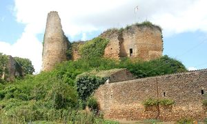
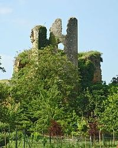
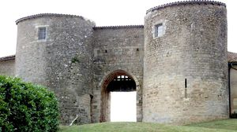
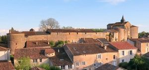
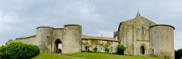
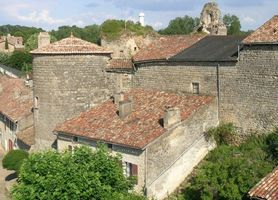
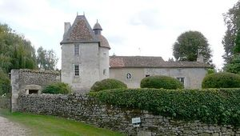
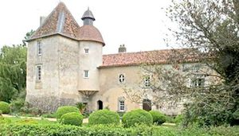

Recensement Jean-Claude Truffet
| Département | 86 — Vienne |
| Canton | Vivonne |
| Commune | Château Larcher |
| Type d'édifice | Vestriges-Château |
| Période d'origine | XI-XVI |








A deux kilomètres au nord le château de Lasverre à Aslonnes. LARCHER, cest à la fin du XIe que les seigneurs de Morthemer deviennent propriétaires du château, jusquà lextrême fin du XIIe où cest la très puissante famille des Lusignan qui fait reconstruire au XIIIe siècle le château dont nous voyons actuellement les ruines. Au XIVe, le site castral appartient aux seigneurs dAngle, famille de Pleumartin. Guichard IV dAngle est un personnage important, entre Jean le Bon et Edouard III. Fin XIV et XVe siècles, il y a un changement de seigneurs par ventes ou mariages : famille de la Vergne, famille de Pons, famille de Chénac, famille Poncet de la Rivière. Au début du XVIe, la famille de Rochechouart-Mortemart prend possession du château, qui fait construire un nouveau château au XVIe siècle. De 1731 à 1783, le château appartient à la très illustre famille des Saint Georges-Vérac, ayant émigré, le château est vendu comme bien national à la famille Brossac qui le démantèle et en vend les pierres. Cest ensuite la famille de Cressac qui en est propriétaire de 1818 à 1870. Le château est ensuite acheté par Albert Candide Boutillier du Retail, frère de larchéologue qui habitait le château de Roquillon sur la commune de Château-Larcher. La famille Boutillier du Retail vend ensuite à la famille Foreau. Par héritage, la famille Lex devient propriétaire du site quelle vend à la commune en 1997.
LARCHER, construire un nouveau château au XVIe siècle, le château moyenâgeux étant à cette époque à labandon. En 1840, ce château du XVIe est entièrement rasé. Il nen subsiste quun pan de mur Après être un temps devenu anglais, le château est démantelé en 1464 sur ordre de Louis XI. Réarmé peu de temps après, le château sera vendu en 1793 et servira de carrière de pierre. En 1840, ce château du XVIe siècle est entièrement rasé. Il nen subsiste quun pan de mur. Depuis 1912, il est protégé par les M.H. Le château est constitué d'une enceinte, au sud, marquée par trois tours, un châtelet d'entrée et son église fortifiée, et d'un ouvrage avancé, au nord, en forme d'éperon, doté d'une tour et d'un donjon très abimé. S'il a perdu son allure originelle au XVe siècle, le château conserve un caractère défensif marqué. LASVERRE, le prieuré de Laverré date du XIIe siècle. C'était une dépendance de l'abbaye bénédictine de Nouaillé. A la Révolution, le prieuré de Laverré fut vendu à un fermier. Le prieuré a été souvent revendu au cours des XIXe et XXe siècles. Le domaine comprend, à l'Est, des dépendances de plan en U et au Sud-Est, un imposant pigeonnier. Entouré de douves franchies par un pont de pierre, le Prieuré de Laverré se compose d'un corps de logis flanqué d'une tour carrée. Une tourelle en encorbellement accolée à la tour et coiffée d'un dôme a disparu au début du XXe siècle.
Famille des Lusignan Famille de Rochechouart-Mortemart
"
A Château Larcher grav 1 à 6 Lasverre grav 7 -8